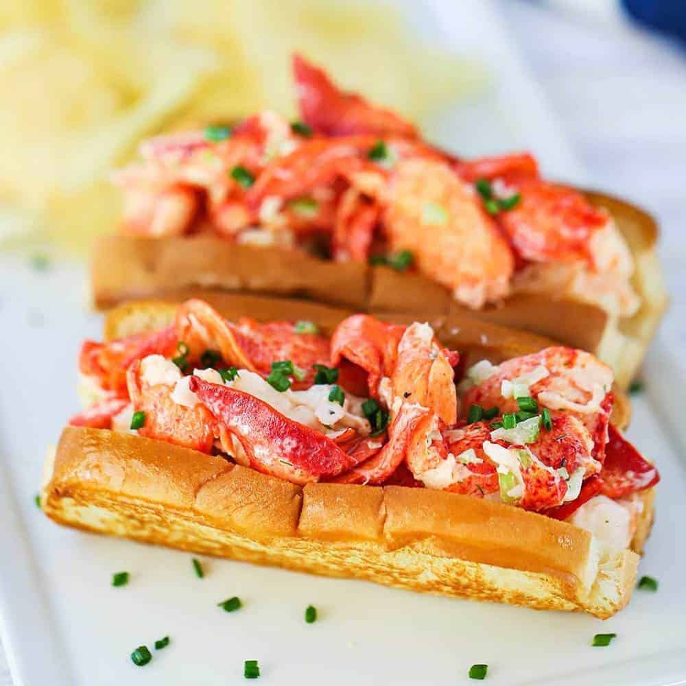

Shrimp Scampi

Description
This lobster roll recipe is fresh lobster chunks tossed in a mixture of mayonnaise, lemon juice and herbs, then served in toasted, buttered buns. A New England classic that's easy to make and always gets rave reviews!
Ingredients
- 2 (8 ounce) cooked Northern (cold-water) lobster tails
- 2 ribs celery, finely chopped
- 2 tablespoons low-calorie mayonnaise
- Salt and ground black pepper to taste
- 1 pinch paprika
- 1 pinch seafood seasoning (such as Old Bay®)
- 4 hot dog rolls
- 1 tablespoon butter, or as needed
Steps
- Chop lobster into bite-sized chunks and place in a large bowl. Add celery, mayonnaise, salt, black pepper, paprika, and seafood seasoning and mix together.
- Lightly toast hot dog rolls and butter the insides. Spoon lobster salad into the rolls and serve.